“在红星路南延线旁的刚需盘之间打造的高端盘，值吗”
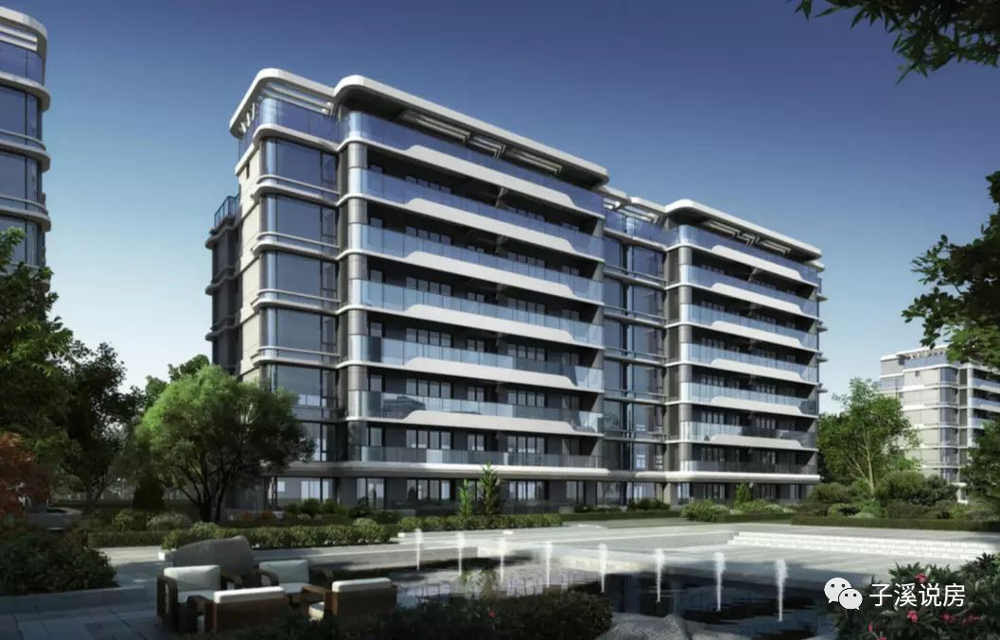
成都有一些小开发商，打造的产品还是很不错；
比如蔚蓝卡地亚（邱氏家族），万华地产，优品道，以及德商。
都有各自的精品项目在成都占据一席之地。
与善于操作大盘的万华地产不同，德商一贯是小地块、高端路线；
德商御璟天骄也是如此。同是高新洋房，它定位高端改善；
本文将继璟南堂、珑樾府之后，再比较一个洋房项目。
01 区位及配套
我们之前写过一篇关于新川的文章，板块整体的区位和配套都可以参考这篇文章。新川板块看这一篇就够了
具体到德商，由于它处于新川板块的边缘地带，虽然在学校、商业、公园上也可以享受新川的配套，但终归距离是有点远了。由于它隔壁就是中建天府公馆，所以享受的配套几乎一样。
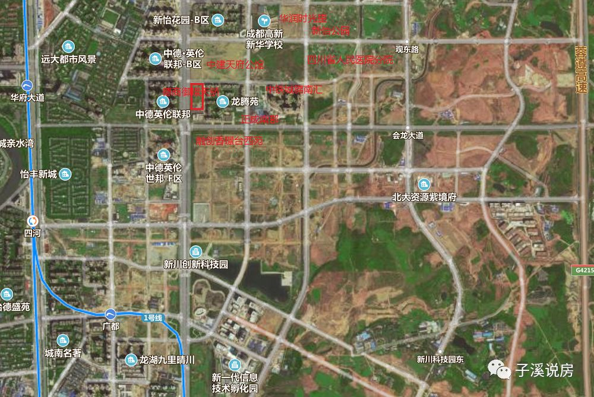
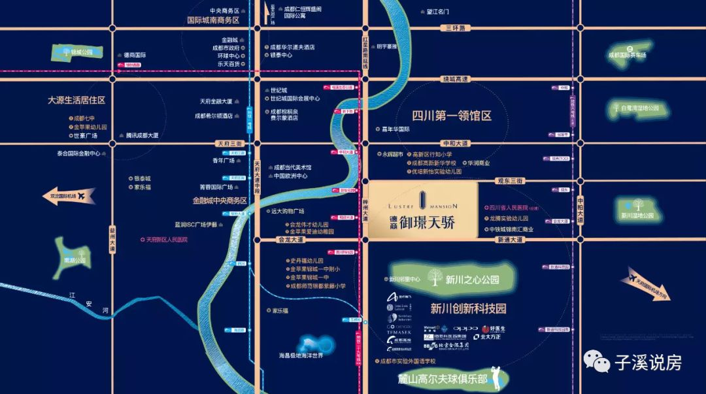
首先是交通配套看，项目紧挨梓州大道也就是红星路南延线；开车进城很方便；回家就要绕道一下了，且噪音污染不可避免；南侧是新通大道，北侧是观东三街；开车出行还是很畅通；地铁方面，距离1号线华府大道站1.5公里，步行21分钟；距离6号线新通大道站1.8公里，步行26分钟。之前说29号在红星路南延线规划有站，目前已经取消规划；未来是否再提未知。
其次是教育配套。项目北侧的中和板块学校还是不少，2公里外的高新行知小学和1公里外的高新新华学校，以及优培新怡幼儿园；以及南延线东侧的中德旁边的金苹果锦城第一中学附属小学（中德人数太多，未必能上）；未来周边3公里范围都是新川的学校如新川一幼和新川一中（项目东侧2公里）；最近的就是高新区优培龙腾实验幼儿园，但估计并不一定能上。所以需要学区的人还是要考虑一下距离。
第三是商业配套方面，大级别的周边步行范围没有，需要去更远的地方；小级别的，周边小区的底商和南侧的邻里中心（有菜市场）以及华润时光里应该可以满足日常需求。
第四是医院需求，新怡公园对面就是四川省人民医院高新分院，走过去3公里内；还算不错。
第五是公园。新川之心公园基本是2个街区意外，直线距离1.5公里。还算不错；
说完配套，我们就知道该项目比不上万科璟南堂的双地铁优势和离学校近的优势，也比不上珑樾府公园、学校、医院围绕周边（但是还没建），所以，德商就要拼产品本身了。
02 产品本身
项目本身占地只有30亩，2017年9月获得土地，楼面价11200元；占地面积2万平，建筑面积8.8万平。整体容积率3，由于做成了高低配，所以住宅部分容积率1.6，总住宅户数202户，车位1：1.2，商业户数377户，车位比只有1：0.8。物业费高层3.6元，洋房4.5元。
小区规划了7栋洋房（7层），1栋高层（32层），1栋商业（33层）。这种形状的规划也是少见。
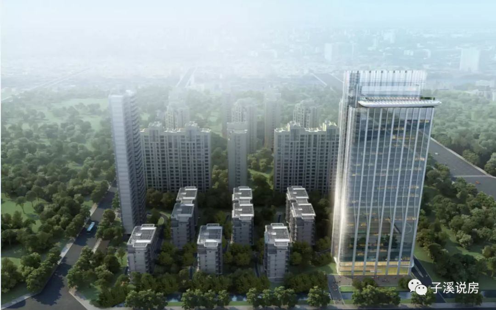
虽然御璟天骄配套远，靠大路，靠高密刚需小区，但打造高端的心不放弃。
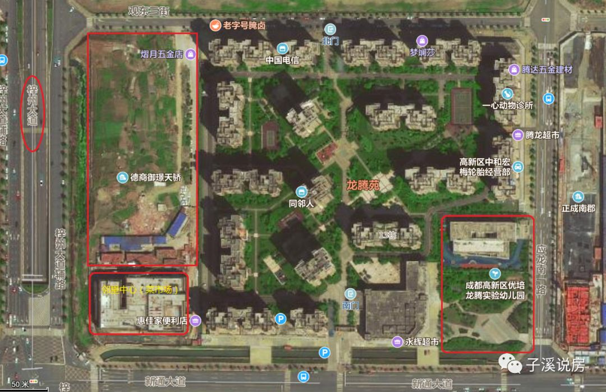
首先在建筑设计上，由于洋房设计都很标准化，虽然公司请了TOP的设计所，但也只能在外立面做文章；外立面采用很有识别度的弧形玻璃和白色铝板；洋房只有7层，确实高新独一份；室内层高都是3米；其它2个高新洋房则是2.95。且都是落地玻璃设计，看起来也比较洋气。
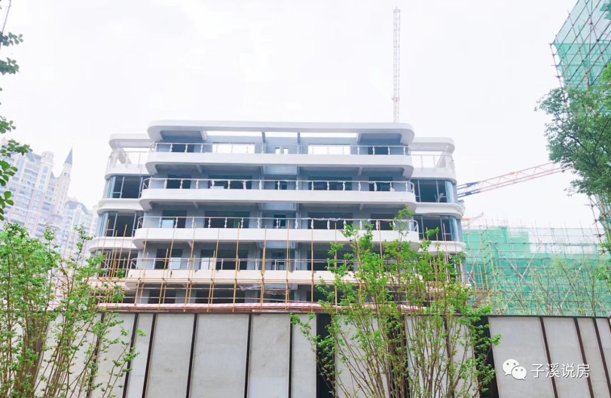
其次在小区配套上，御璟天骄那1栋商业原本打造的是号称均价2.5万元的豪华公寓，虽然户型很赞，但无奈定价太高，很不好卖；后来改成了自营的高端酒店，据说类似辉盛阁，给自己起名叫御璟阁酒店，至于服务品质能否赶上辉盛阁，那就不知道了。然后在顶楼打造了一个天际会所，实施会员制，业主有打折，配套了泳池，健身房，宴会厅和会议中心等。一下子似乎提升了小区调性。周边小区真要享受这个配套，住一下这个酒店或者办个会员也并不难。
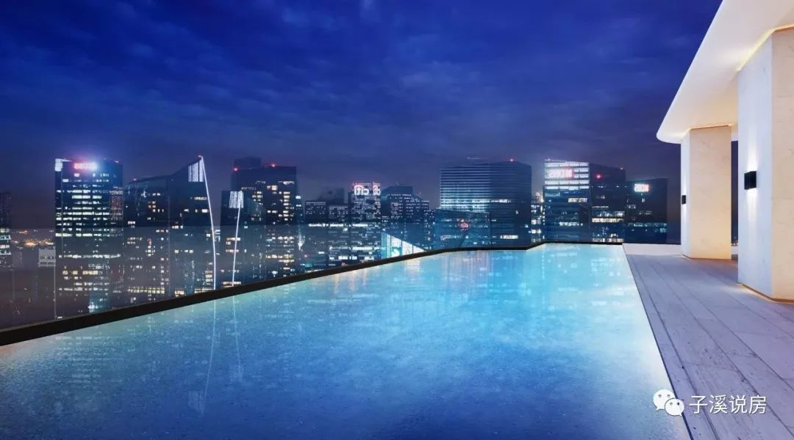
第三就是不得不说的德商式装修。洋房是法式轻奢风格，装修类似迎晖天玺，但标准略低，5000多；高层是现代简约风格，装修标准略低，高层地暖没有锅炉。但都是地暖、新风、中央空调配齐；比高新其余两个洋房多了中央空调。壁纸也是全的，衣帽间也有，墙面做了木装饰。而装修也是体现到房价里面的，政府现在对装修用材是仔细审核的，值不值那么多，必须有报价。（下图中第一图是洋房的精装，第二三图是高层的精装，第四图是底跃精装）。
个人更喜欢高层和底跃精装风格，简约大气；洋房的精装败在地板拼花，户型不大的房子其实不该用拼花，显得凌乱狭小。
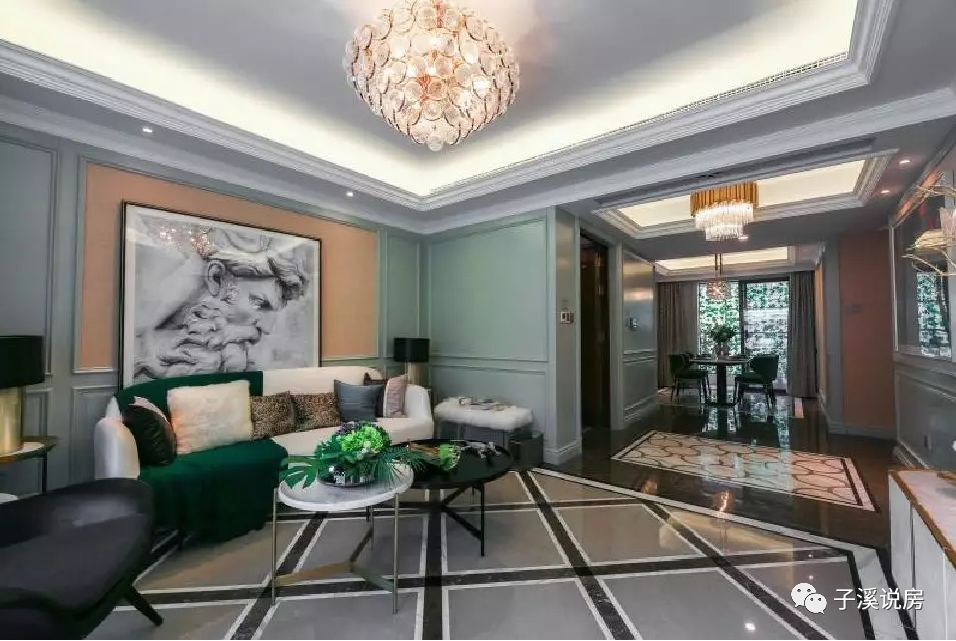
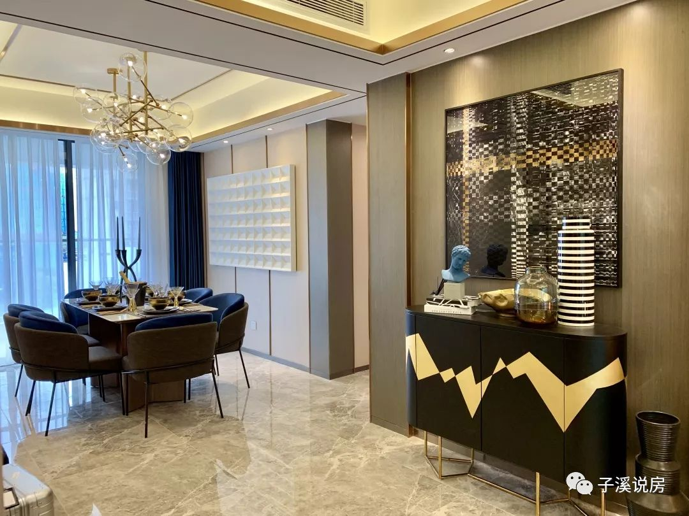
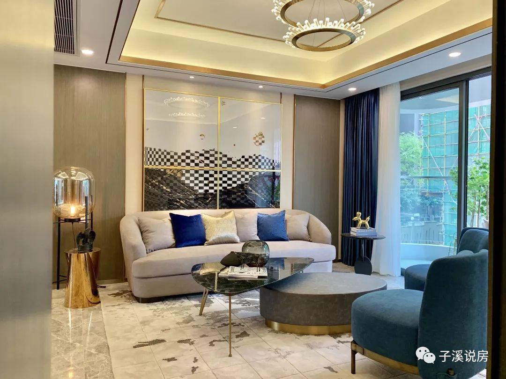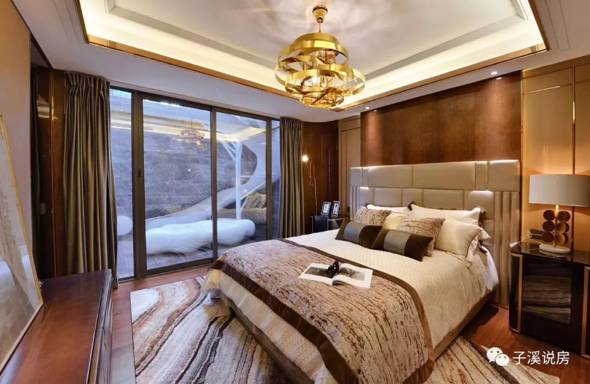
在户型和梯户比上，小区倒是和别的洋房差不多，没拉开太多差距。高层2T2户，户型只有一种，149平米的四房双卫；洋房为1T2户，双开电梯，都有电梯厅，平层面积147平米，洋房阳台1.6米宽。底跃287和257平米，顶跃167平米。
下图是洋房户型图，基本一致，不同点在于主卧的弧形飘窗，有的有有的没有；
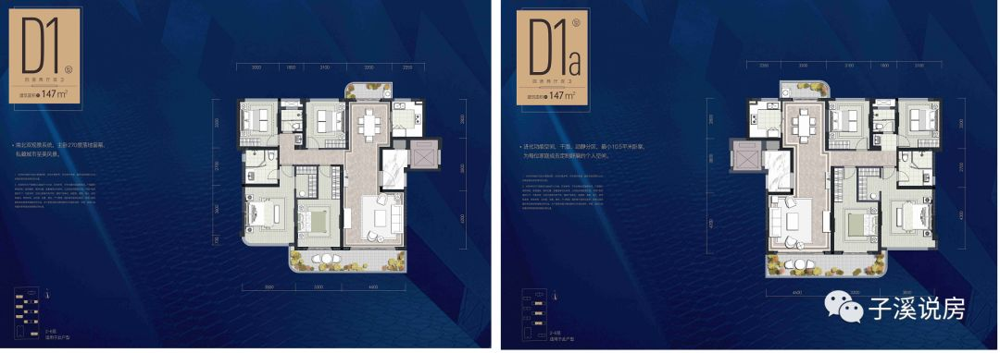
下图是高层的户型图：几乎一样镜像对称。
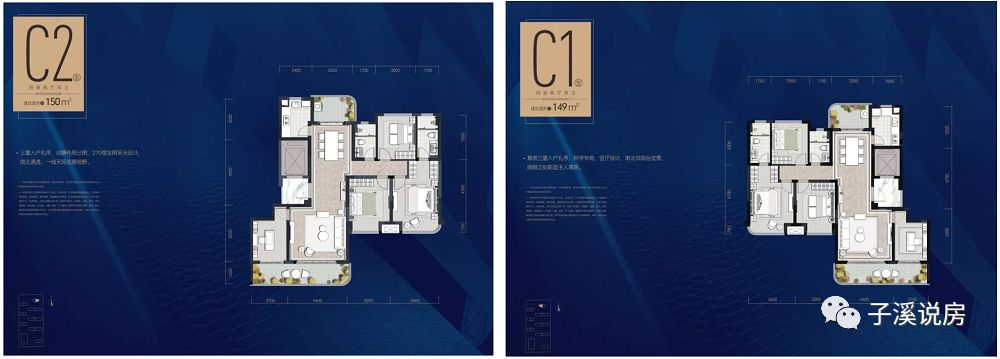
只是带巨大花园的边户型底跃，颇有别墅的味道。
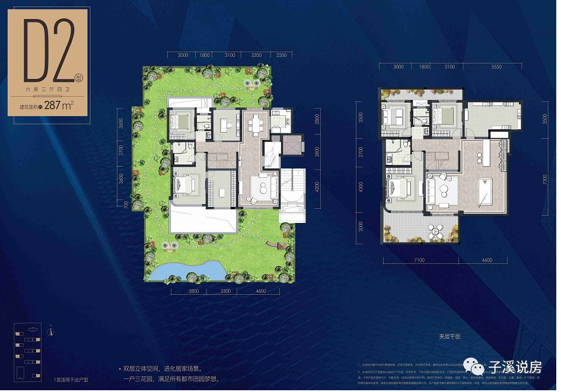
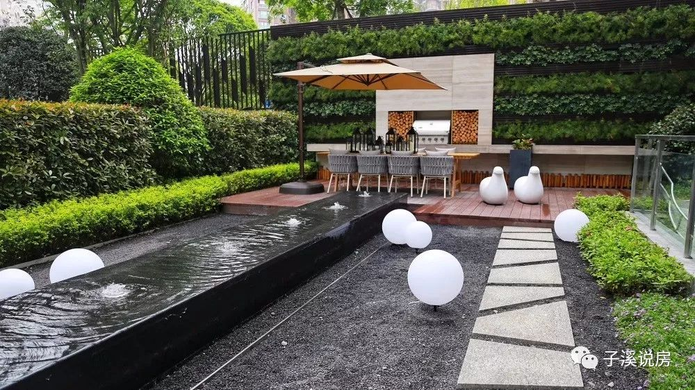
既然小区走了高端改善路线，价格自然也就不便宜了。据说定价在2.4-2.7万之间，比对面的融创香璟台西苑之前的精装洋房17000（也是7层），价格贵了7000-10000元，而融创香璟台洋房也是地暖新风中央空调，法式带木饰精装，只是楼间距和容积率比德商差了不少，东西北三周还有高层公寓遮住。
按拿地成本计算定价，我们认为2.2w-2.3w左右是比较合理的，2.4万以上就有一定的溢价，而且竞品洋房比价之下，璟南堂1.9-2.4w，珑樾府2.2-2.6万，御璟天骄定2.4-2.7万，也算梯度效应明显。而御璟天骄高层价格也要2.2万左右。值还是不值，还看购房者用钱投票。
总结一下：
1、项目的地段和环境决定了他只能在外立面、建筑品质、装修及内部配套上寻求高端定位，目前看符合高端改善盘的定位。
2、售价方面由于定位高一些，自然会比目前在售的卓越洋房和万科洋房都贵。高层要330-350万左右，洋房平层350-400万之间，底跃则可能在700-800万了。定价在目前的行情下也算紧跟形势。未来新川还有几个楼面价13000左右的盘，尤其是东侧2公里的金隅地块楼面价可能接近2万元（其实可以建别墅）。所以新川目前的地王数量算是仅次于武侯新城了。未来的盘都不得不走高端低密路线，虽然可能是高低配。
3、配套方面，除了沿主路小区会比较嘈杂外，其余配套还是可以，只是距离有点远。不算新川配套最好的盘，但除地铁外也算配齐了。
4、适合那些不在乎学区距离和地铁，而注重小区格调和品质的改善购房者；而高层虽然密度较高，但视野不错，也不临路，一般改善类客户或许关注也会不少。
看完了我们的3篇洋房测评，欢迎参加一个小投票。以便我们后续写出更中肯、更受关注的文章。
接下来，我们准备再写几个洋房盘，因为我们发现，洋房在成都开始流行起来。
说明：文章中图片来自项目官微及开发商处，部分来自网络；
（全文结束）
特别提示：
我们五一节前调研了成都很多的项目，从住宅到公寓到别墅均有，调研简报都在知识星球发布了，欢迎加入知识星球浏览。知识星球主要给粉丝提供购房一对一咨询、更丰富的项目信息和政策点评、VIP群圈层建立和交流等；一般购房性提问欢迎登陆公众号的问问子溪栏目，解答非常详尽周全。